Redevelopment and interventions into outdated mass-produced housing stock in Kyiv, Ukraine
or "We had a Balcony Issue"
STATE OF THE DEBATE
- There is nothing more permanent than something temporary -
INTRODUCTION:
The idea of USSR mass housing was taken from the Bauhaus ideas from the 1920s and Le Corbusier's Radiant City, and established through the recruitment of Ernst May, Frankfurt’s city planner, and his entire New Frankfurt team by the Soviet Union. However, the critical turning point came only with purchasing a license from Camus System (French panel technology of prefabricated concrete construction), which promised mass production of dwellings at a scale only found at that time in the automotive industry. The Soviet Union architects and planners further adapted it to meet the state targets for economic rationalization, cost control and efficiency of production (Meuser, 2020), but already post war. The housing shortage of the 1950s caused by the WWII destruction and rapid urbanization following Stalin’s plan economy industrialization forced widespread adoption of prefabricated housing construction technology to meet housing demands.
The dwelling construction industry was completely centralized in the Soviet Union and included the production of building materials, the actual construction of housing and the housing design system. The state’s planning institutes developed the standard designs, which were universal with the possibility to be adapted to different regions and climates (Meuser, 2020; Rozanov, 1982). They also set the standards for urban layout of new settlements: density, the requirements for infrastructure and the distribution of uses. (Rozanov, 1982). Amenities like schools, daycares, healthcare, cultural, sports and retail services were evenly distributed according to distances and density and were initially intended to provide self-sufficiency for these areas (Enyedi, 1996; Gnatiuk & Kryvets, 2018). Majority of these standards are used in Ukraine until now, such as distances to daycares and schools, etc.
New districts filled with prefabricated housing were in fact suburbs, as instead of developing naturally overt time like cities, they were built on a whim like satellite settlements made to meet the needs of the post-war nuclear/working-class family (Niemeyer, 2020). People commonly refer to them as “sleeping districts.” By the end of its implementation (or at the time of USSR dissolution), 75% of the USSR population lived in mass public housing built between the 1950s-1990s (Meuser, 2020). Due to the massive housing stock of this type in modern Ukraine and complicated property ownership model, the maintenance responsibilities were never clearly defined and impacted the rapid deterioration of housing following the mass housing privatization in the 1990s.
However, the deterioration of the mass housing stock started even during the USSR times. All urban housing had to be built and maintained only by the state and with state funding. This and pressure on local authorities to keep rents low and use all funds for the new housing construction had a profound effect on the upkeep of the existing housing stock; it deteriorated, with time even the one that was built post-war, which led to a physical and even social decay of whole residential areas, especially visible in central neighbourhoods with old pre-socialist housing stock or one that survived WWII (Szelenyi, 1996).
SOVIET-ERA MULTI-UNIT HOUSING STOCK IN UKRAINE AND KYIV: FROM THE 1990s UNTIL NOW. PROBLEM STATEMENT
Similarly to the construction of public housing in USSR being aligned with global processes, the privatization can be linked to global processes as well. The Margaret Thatcher’s neoliberal politics introduced the “Right to Buy” law in 1980, and this law was adopted during reunification of Germany, when Federal Republic of Germany (West Germany) inherited mass public housing stock of German Democratic Republic (East Germany) and had to transition the former East Germany to market economy and liberal democracy (Lux & Sunega, 2014; Neugebauer, 2020). This pattern was further adopted in post-socialist countries following the USSR collapse.
In Ukraine, the Law "On the Privatization of State Housing Stock" (passed in June 1992) determined the privatization through the outright or free transfer of housing to the tenants, which meant, what is commonly believed, to absorb the shock caused by market transformations. It also resulted in loss of public housing managed and administered by state that previously ensured just distribution and based on needs and thus the state’s control over the housing policy through the public housing stock, and enacted the process of housing commodification (Fedoriv, 2020).
The privatization was done in a way that any number of units in a multi-unit building could be privatized. So, the privatization happened without a condominium association being in place to define the rights and responsibilities for the common elements. Similarly, unit-by-unit privatization meant that the management and control of the building and land remained with the state (Struyk, 1996). The unresolved question of land lead to non-traditional ownership arrangements, commonly referred as quasi-ownership. The transfer of property rights related to building envelope, common elements and publicly-owned land without defined boundaries might take many years to complete, nor there a consistent policy to facilitate this process (Tsenkova & Turner, 2004). Recent Home Ownership Associations reform is aimed to solve the problem of responsibilities for the upkeep and maintenance (Drozdov & Partners, 2023), however, will take years to be implemented.
Politicians in the 1990s used housing privatization to offset the declining living conditions as a result of political and economic transformations and to avoid potential social unrest. This strategic social policy was used in all post-socialist states (Lux & Sunega, 2014). It also was a pragmatic choice for the government that was navigating highly disruptive economic reforms that were resulting in job loses, rising prices and insecurity. Creating secure debt-free society of homeowners played a crucial role in offsetting, ‘shock absorbing’ and justifying declining living standards (Stephens et al., 2015) and aided in sustaining newly forming middle class that was crucial for driving the economic transformations for macro-economic reasons. It also delayed the urgency of developing housing finance systems, thus creating high levels of homeownership with low levels of mortgage debt (Stephens et al., 2015). However, it also resulted in a paradoxical situation, where quite a substantial number of owners who were able to “buy” their homes but are not able to sustain operational, maintenance and renovation costs (Hegedüs, 2012). At the same time, it automatically shrunk the public housing stock and allowed the commodification of housing. But most importantly, the state lost its ability to regulate the housing policy through the existing housing stock. In the meantime, the share of people who did not benefit from the privatization rose and they were forced to rent housing in the private sector that is unregulated and provides minimal guarantees and securities (Fedoriv & Lomonosova, 2019). Significant p art of renting from the private owner is done “in the shadow,” which in turn impacts the ability to collect taxes (around 70-90% of rental transactions are not taxed) and protection and rights of the tenants (Drozdov & Partners, 2023).
To sum up, the ‘shock therapy’ transition from centrally planned to market-based economy in Eastern Europe was one of the most impactful social and political transformations of the 1990s having an impact on more than 28 countries and over 400 million people. Old political link, distribution networks and legal frameworks suddenly disappeared and had to be replaced by new ones, which occurred without the support of institutional structure in place and financial and legal transparency to facilitate economic change; these barriers are usually unrecognized but crucial (Buckleyand & Tsenkova, 2001).
While different sources point out to different numbers in home ownership percentage, it is safe to save that it is as minimum as 72% according to some studies (Tsenkova & Turner, 2004), including the last study accounting for IDPs and destruction of housing stock by war (IOM UN Migration, 2024) and at least 83% according to last pre-war survey conducted by Cedos think-tank, maintaining the highest homeownership rate among European countries (Sukhomud & Shnaider, 2023).
Early series of 1950-1960s residential buildings were not designed for a lifespan that they are already existing and initially were considered as a temporary housing solution to address acute housing shortages. Other critical issue with this housing stock is its decay beyond the buildings, such as insufficient parking spaces that prompt illegal parking arrangements and peripheral location on city outskirts contributing to urban sprawl (Gnatiuk & Kryvets, 2018). Vast green spaces between buildings are mostly unused, neglected as well, sometimes subject to DIY urbanism, with outdated playgrounds, or repurposed for make-shift car-parking (Niemeyer, 2020), but very rarely used for what they were intended for – recreation. Absence of upkeep and maintenance strategy as well as elimination of deductions for capital renovations in 1996 means that currently no resources and no regulations to acquire such resources to fund the renovations exist (Fedoriv, 2020). This, in turn, resulted in individualistic approach to buildings’ upkeep, such as spot façade repairs by the residents to insulate the dwelling units, replacement of windows, refurbishment of balconies or their inclusion into living spaces, creation of large building-height murals on blank side walls of the buildings etc. These refurbishments are largely unregulated and some of them can pose a risk in themselves.
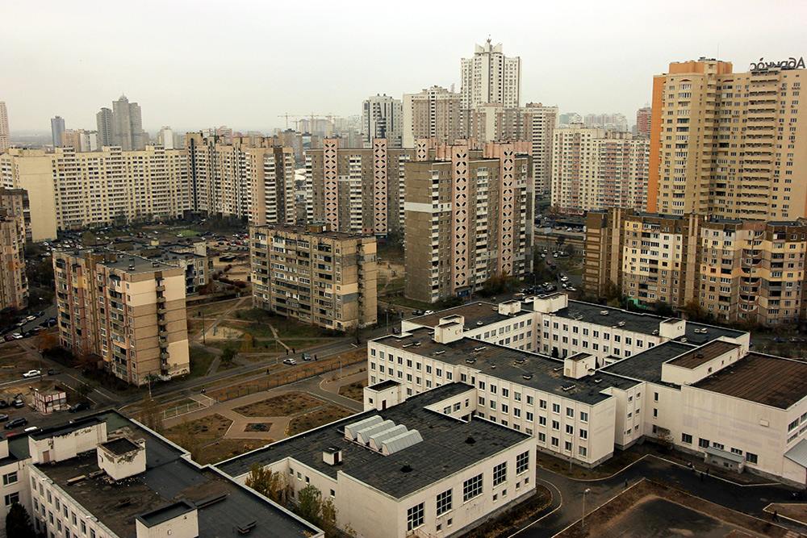
At the same time, the same planning norms – functional zoning and strict observance of building and sanitary norms, all basic infrastructure or possibility to reintroduce it, sich as daycare, schools, hospitals and outpatient departments, access to transport and basic public utilities (Gnatiuk & Kryvets, 2018) – were never updated substantially, and no methodology was developed/adapted for interventions and infills into these areas, which would signify state’s understanding of the urgency to renovate this housing stock.
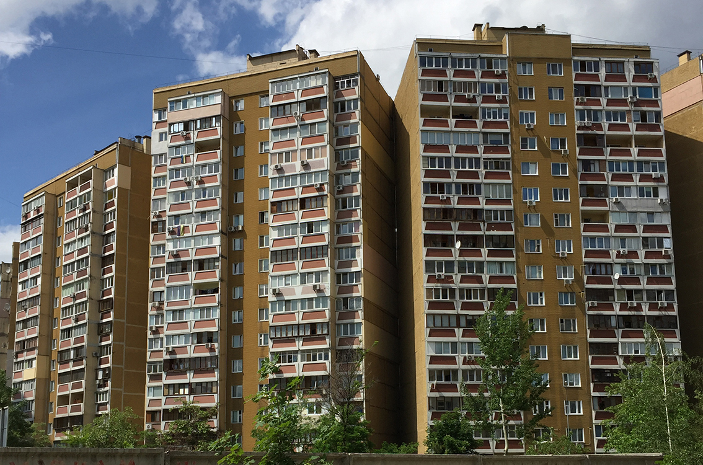
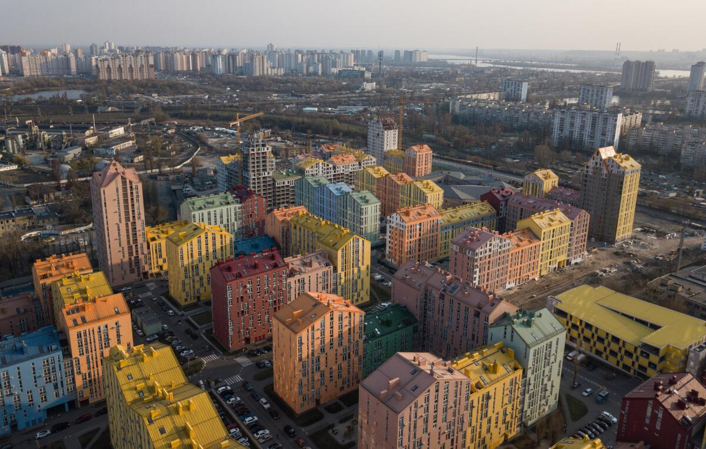
Mass housing put Ukraine into the loop of recycling same housing ideas employed during Soviet times, the whole “copy paste architecture” (CANactions School, 2016, 02:00) already in the 1990s and 2000s, refusing to deviate from reproducible mass housing and insisting on uniformity, standardization and endless repetition, recreating housing for the masses, although not for masses anymore. This can be proved through first of all visual resemblance in building envelope, monotonous façade solutions, replicated site plans and distances, absence of dense grid or blocks structure, and scattered introduction of mix of uses resulting in continuous patterns of “sleeping districts.” In addition, there is little considerations for maintenance, buildings are built on public land, leased from the city. It’s the same replica of a Soviet model that recycles same principles.
On the bright side, these areas are relatively stable, and social segregation is not so pronounced; on the contrary, these districts are characterized by social mix with mix of incomes. The reason for that lies in private ownership of majority of the units established due to privatization and overall low residential mobility, so the mechanism of rental price difference that determines the gentrification in the Western world does not work (Gnatiuk & Kryvets, 2018).
In 1991, Ukraine had 18.3 million housing units, 64% of which were in the urban settlements, and another million of units was added by 2013. In Kyiv and Kyiv region the indicator had grown by over 20%. The patterns of growth over the years are inconsistent for the regions, except for Kyiv and Kyiv region showing consistency over all the years of independence, with the growth beginning already in 1995 (Fedoriv & Lomonosova, 2019). However, the area of housing stock in disrepair almost tripled since 1991 and increased by 1.5 times in urban settlement, but the number of residents residing in these conditions decreased almost by half. Almost all of these housing is located in urban settlements (Fedoriv & Lomonosova, 2019). More than half of Ukraine’s population live in overcrowded conditions (54%), with city residents experiencing more overcrowding, at 62%, compared to residents of small towns and rural areas. The share of children living in overcrowded conditions ranges at 74-76%. Additionally, despite the impression of unprecedented scale of housing construction (as per numbers above), the majority of population lives in the mass housing stock built during USSR times, i.e. in 2018, 70% of population lived in housing built in the 1960s through 1980s, with only slight difference between urban and rural residents, at 73% and 64% respectively. The distribution did not change much over the independence days. As of 2018, a little less than 19% lived in the housing pre-1950s, and only 11% households lived in housing built in post-socialist time. Additionally, only 38% of households lived in buildings renovated in 2001 or later, which means that 45% of households live in buildings that were never renovated (Fedoriv & Lomonosova, 2019).
At the time of full scale invasion, Ukraine had outdated housing stock that is inefficiently managed, no examples of it being reconstructed (Drozdov & Partners, 2023) and estimated 3.5 million people internally displaced and 6.5 million abroad (IOM UN Migration, 2024). “The non-return of forcibly displaced people poses a major threat to Ukraine's post-war economy and recovery as a whole [… and will] aggravate the demographic crisis that was experienced by Ukraine even before the war” (Drozdov & Partners, 2023, p. 11). The annual loses in case of non-return will range in 2.6-7.7% of pre-war GDP. Post war reconstruction of the affected regions is critical for people to have a place to return to. The scale of the destruction following February 24, 2022 is estimated to exceed all new housing commission in the last seven years before the invasion, with the area of 83 million square metres or 8.2% of hosuing stock. One year after the invasion, demages from the destruction reached over 135 billion US dollars with housing being most affected and comprising 38% of total damage or 50 billion US dollars, affecting 2 million residents (Drozdov & Partners, 2023).
Before the war, 2021 indicated the highest indices in the last 30 years of 11.4 million sq.m of housing being commissioned. After February 24, 2022, almost all developers put a pause on the construction work. The total area of constructed housing in 2022 was 38% less than in 2021, with eastern and southern regions being hit the most, at 70-90% (Drozdov & Partners, 2023).
In additional to war, Ukraine and its housing stock, as any other country, is not secured from the impacts of a climate change, with biggest projected problem being the shortage of water resources due to reductions in river flows (Drozdov & Partners, 2023) and increased occurrence of extreme weather events, such as forest fires, floods and droughts. Up to 55% of energy grid in Ukraine relies on nuclear power that relies on water flows for constant cooling of its reactors. By 2050 half of the housing stock will remain as it exists now and 60% of it was built before energy efficiency standards (Drozdov & Partners, 2023).
Ukraine maintains a subsidy system introduced as another shock absorber in the 1990s for utilities. Various social groups, such as schoolteachers, military personnel, people with low mobility and health issues preventing them to participate in the workforce, Chernobyl victims, and households living in unacceptable living conditions with less that 7m2 per person benefit from it. Utility and housing costs are major problem, particularly heating, as they increase faster than income (Tsenkova & Turner, 2004). Those who live alone (21%), especially common statistics among elderly people who live alone (28%), spend more than 50% of their income only on utility bills (Fedoriv & Lomonosova, 2019). According to the 2019 CEDOS survey, almost half of households in cities with a population of more than 100,000, spent 20 to 40% of their total monthly income on utilities alone, and more than 3 million households received subsidies to pay utility bills in 2019 (Fedoriv, 2020).
Ukraine has multiple housing programs targeting different social groups, however all of them expand homeownership as a result, and do not contribute to development of social and temporary housing stock. (Fedoriv & Lomonosova, 2019). Following the 2014 annexation of the Crimea, the government introduced subsidized mortgages for IDP, however, it again supported people with sufficient purchasing power (Drozdov & Partners, 2023, p. 17) and did not address the need for housing for all IDPs, leaving them to private rental market that often segregates and discriminates them. While the “residualization” of social housing provision can be compared to one in Western countries and their adopted neo-liberal policies, the lack of financing in Ukraine even for residual social housing provision leaves almost no alternatives to housing delivery by private market including for those in dare need, such as homeless or impacted by life situations like illness, job loss or war (Sukhomud & Shnaider, 2023).
Despite increased public discussions about the housing and pressure for the need to rehouse IDPs, state’s involvement in housing policy remains weak and fragmented, thus forcing the resolution of housing issues for those affected by the war locally and by individuals, as it was done by municipalities and communities (“hromadas”) together with volunteers and civil society actors, through unevenly distributed and coordinated hosing initiatives and international aid agencies or underregulated private rental market. While Ukrainian law guarantees social housing provision for vulnerable population and IDPs, it is impossible to actually provide it with the scale that it is built, e.g. 72 social apartments were built in 2019 in Kyiv with a total population (only official one) of 2.9 million people (Sukhomud & Shnaider, 2023).
“State housing policy in Ukraine today does not guarantee everyone the right to housing enshrined in Article 47 of the Constitution of Ukraine” (Fedoriv, 2020, p. 188). Furthermore, the main problem lies in imbalance between socio-economic condition of the country and the housing tenure, developed during mass privatization of the housing stock over the last decades that artificially created one of the highest private outright homeownership shares in Europe. A housing reform that will address the maintenance, ownership and regulation of currently obsolete residential buildings is inevitable (Fedoriv, 2020).
Reconstruction of the housing stock will involve private developers and therefore needs to be profitable, even if the policy framework for its occurrence will ever be in place. Another aspect of the problem that cities already fund renovations of hosing stock to certain extent. Ukrainians fund the maintenance and renovation of private property through their taxes, whereas instead these funds could have been redirected towards social housing. Ultimately, the actions just delay the responsibilities of homeowners for their housing. Reconstruction with involving a private developer can solve the issue but will inevitable pose a hard question for society to answer and that is: what is more important to have – homeownership or actual homes? (Fedoriv, 2020). Despite common belief that there is no point in reconstruction during the war, future post-war processes are dependent on the existing institutional capacities, legal frameworks and actors (Diefendorf, 1989, as cited in Sukhomud & Shnaider, 2023).
RESEARCH QUESTION
What are the prioritization criteria and phasing approach to redevelop and renovate outdated Soviet-era multi-unit housing stock in Kyiv, Ukraine?
Because the housing stock of this size, where around 74% of the population lives in the housing stock built over the thirty year period, cannot be renovated all at once.
DATA AND FINDINGS
BROADER STATISTICAL CONSIDERATIONS AND LIMITATIONS, AND DATA USED:
• No census data is available, as the last census was conducted in 2001 (Fedoriv & Lomonosova, 2019). All the subsequent population calculations are estimates on estimates. Additionally, no granular population data is available, beyond the city or administrative city regions that are big and include mix of housing and are not representative of urban fabric changes.
• Limited socio-economic data due to shadow economy and still widespread corruption. It is unclear how data on living conditions in annual statistical report (Derzhstat, 2021) was collected, as the utility and rent spending do not sustain reality check for none of the salary brackets defined in the report. The available socio-demographic data was derived from several publications, as referred to above.
• Landsat Science geotiff files were used to calculate urban heat island effect
• OpenStreetMap data was used to extract building footprints, transit data, etc.
• Construction year of multi-unit residential buildings was derived from real estate platform lun.ua. Some limitations were detected for this data as well. During manual classification, as data scraping wasn’t available for this particular data set, some inconsistencies with older housing stock were found, such as big amounts of buildings from 1910s being classified as completed in 1917, which is questionable due to historical events, such as constant changes of power and civil war in 1917 up until 1920, when situation stabilized only with the occupation of majority of Ukrainian territory by the Soviet Union. Therefore, it is questionable that major construction processes could be taking place at the time when Kyiv was an active battlefield i.e. state/government changed 14 times during these years. It can be assumed that the records of construction completions were lost for certain buildings during Ukrainian War of Independence, and they were reclassified in city records and archives as 1917 (being year of first mention).
• Obtained from WorldPopHub population density data yielded no substantial results as it is calculated based on built up area, which includes industrial and former industrial but non-revitalized areas as well. This can be observed when differentiating housing stock from all built up area.
• KyivPassTrans data was used for transit data that was not available in OpenStreetMap and to verify the data from OpenStreetMap.
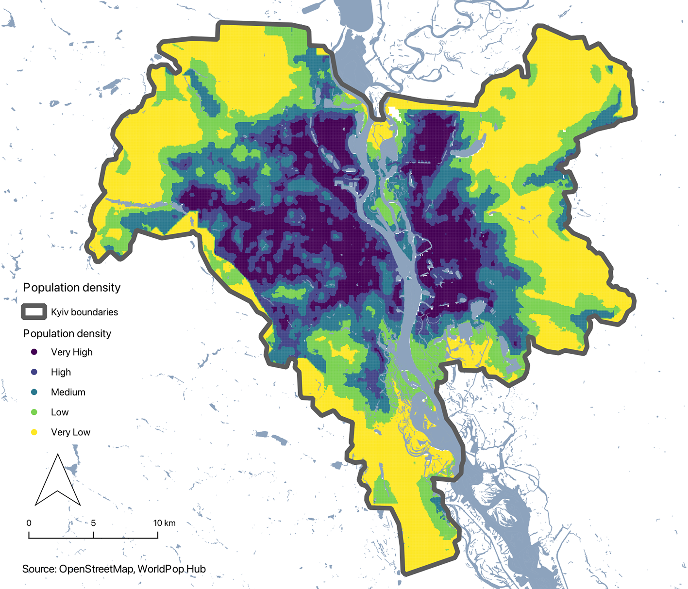
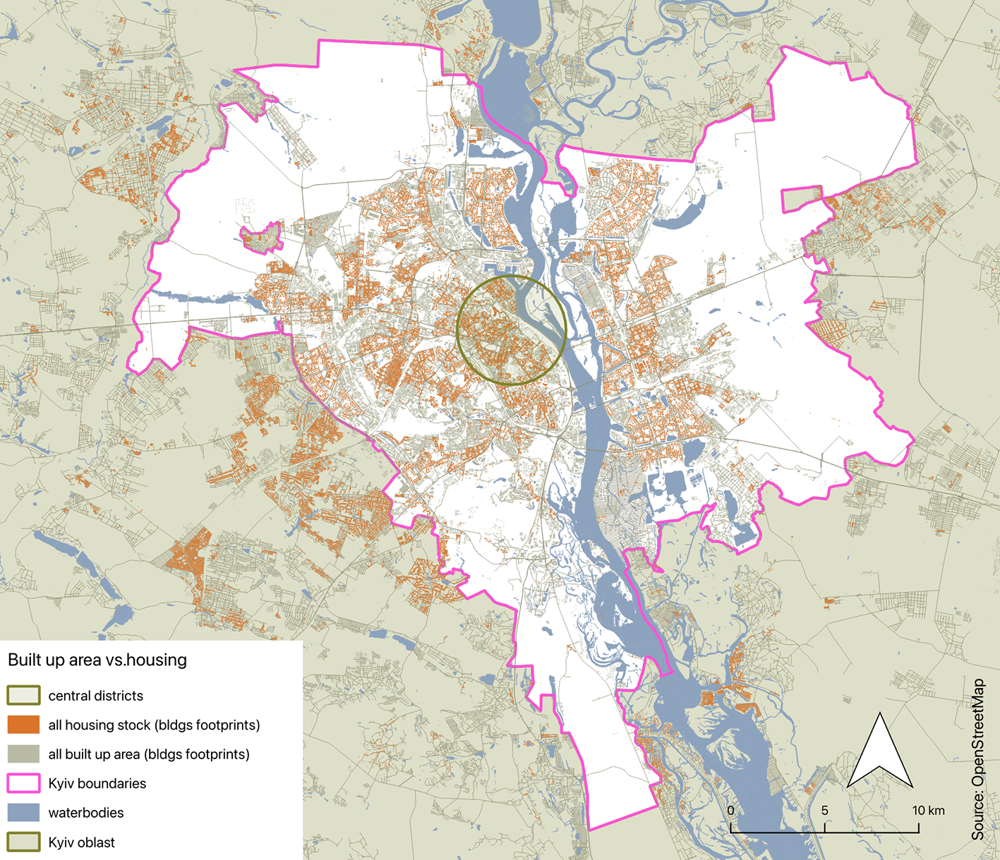
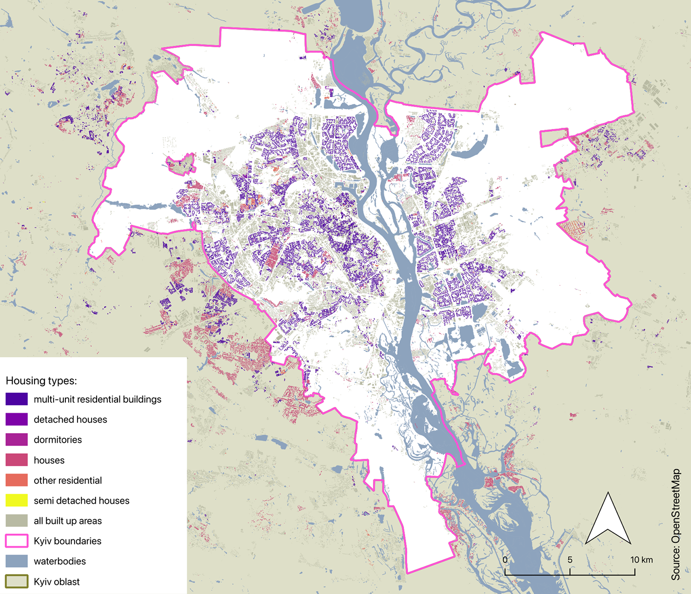
PATTERNS OF GROWTH IN THE 1990s AND BEYOND
It is visible that the patterns of growth are vastly focused on limited upgrade to existing housing stock, both central areas and outskirts, and with introduction of few new residential areas in the outskirts/periphery.
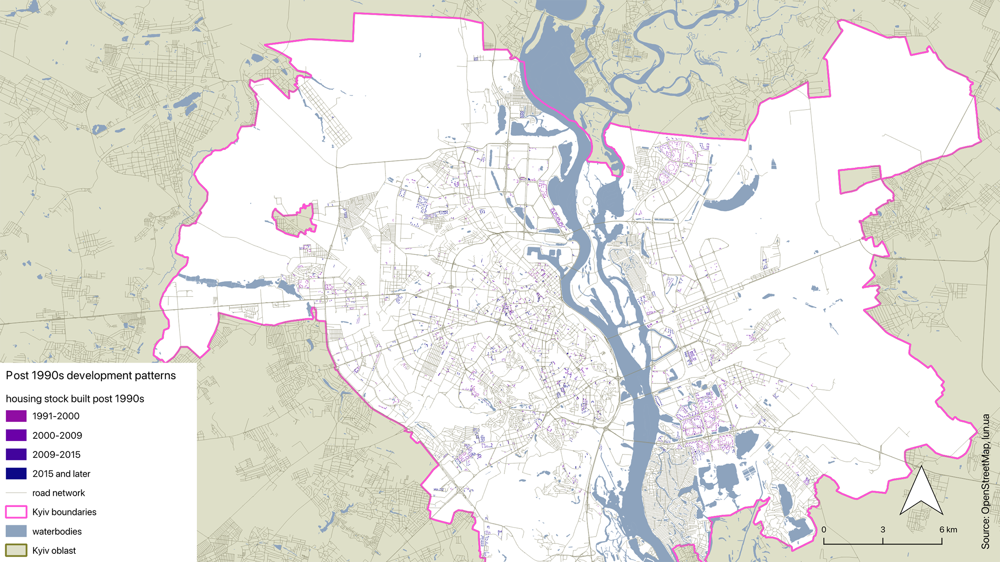
METHODS USED FOR DETERMINING THE PRIORITIZATION CRITERIA AND FINDINGS
Based on available data, a set of methods were developed to define prioritization criteria. They are not exhaustive but based on available research of post-war social housing stock as well as some commonly accepted methods for projecting and directing growth, such as transit-oriented development (TOD). Beyond the objective to provide a roadmap for the redevelopment and renovation of obsolete housing stock, the goal of the prioritization criteria is to propose considerations for a comprehensive growth management framework which will balance housing supply, economic activity, population growth and social and physical infrastructure.
• Commercial and employment density that includes all the uses that provide services but employ the population at the same time: schools, universities and colleges, daycares, public service offices and government buildings, industrial, institutional, commerce and retail, offices, community centres, etc. As noted in literature review, initially, these areas were planned as self-sufficient however, the commercial activity is usually reflective of consumer potential, which drastically reduced by 1990s hyperinflation. Therefore, the services that were initially planned on the periphery did not scale up significantly and commercial activity concentrated in the central districts to respond to reduced demand and spending capacity. Economic activity needs to be directed to the outskirts as well to achieve clusters of neighbourhoods, accommodate residential growth and reduce excessive commutes to currently central employment areas.
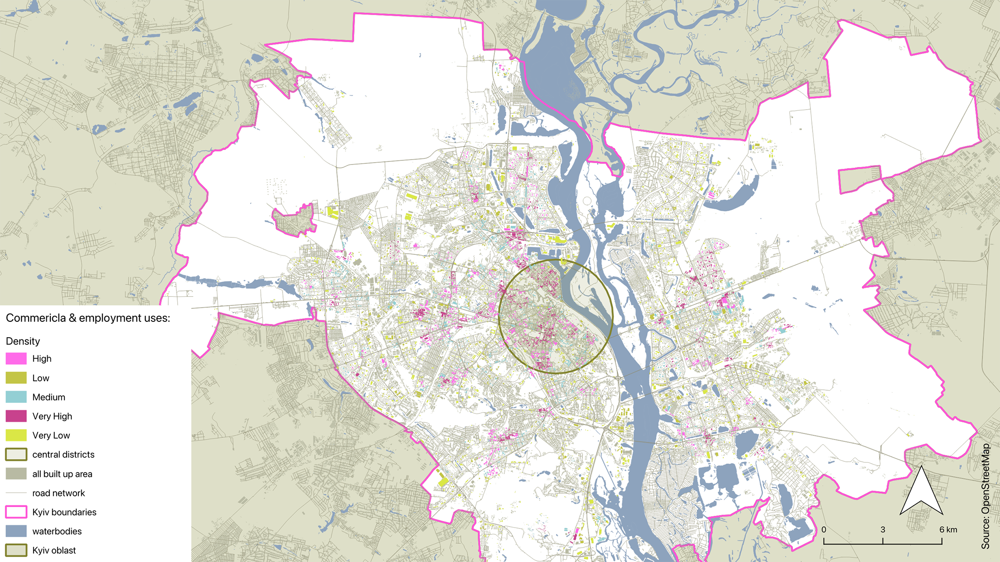
• Rapid transit network that signals where growth can be directed in the first place to form transit-oriented development, which are commonly used for infill and redevelopment (ITDP, no date). This method includes some projected data, as all the transit systems, except metro can hardly be called rapid at the moment. The conversion into such will increase travel choices available. Map 6 defines the networks that can be transformed to rapid transit network in the most efficient manner in terms of feasibility of the projects and economical input. The separated railway network (in case of light rail and regional trains) already exists, and can be refurbished in terms of car fleet, gradual upgrade to stations and platforms and railway system itself with minimum investments. In case of streetcars/trams, they are merged with traffic at the moment, which impedes the efficiency of service provision. However, it can be upgraded to separated network or appropriate fine system can be imposed; the fleet and gradual upgrades to rail system will be required as well to increase frequency and capacity. Additionally, some outskirts are badly connected both to central areas and between themselves.
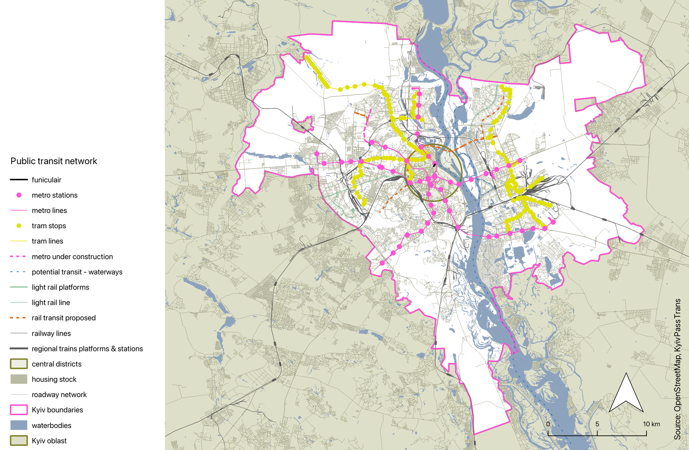
• Urban heat island effect and land surface temperature, which indicate that residential areas on the outskirts are contributing to urban heat island effect in the same way as central, though they are planned to accommodate more greenery as per Radiant City key principles. Redevelopment of the obsolete housing stock represents an opportunity to adopt sustainable practices in residential construction, reduce urban heat island effect, surface temperatures and make city more comfortable and safer for residents.
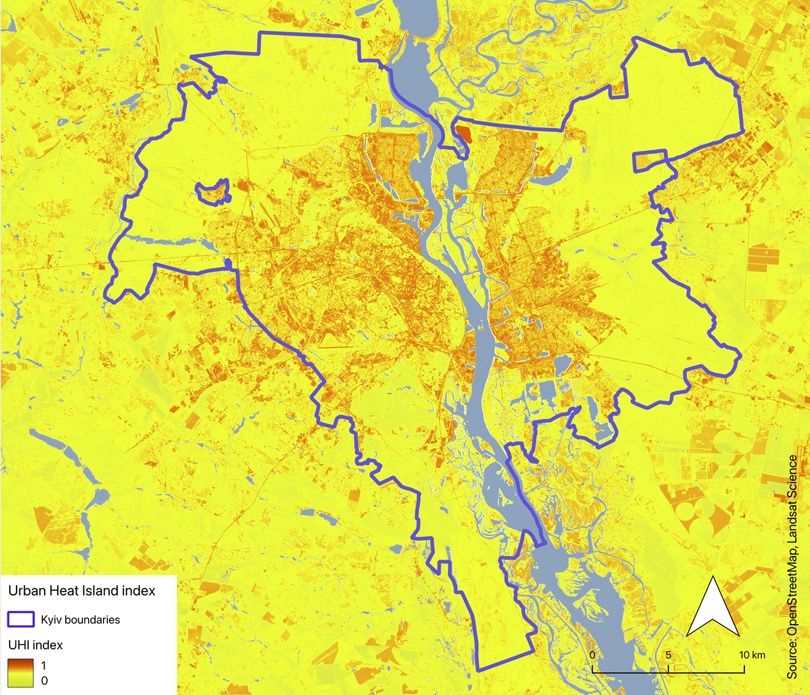
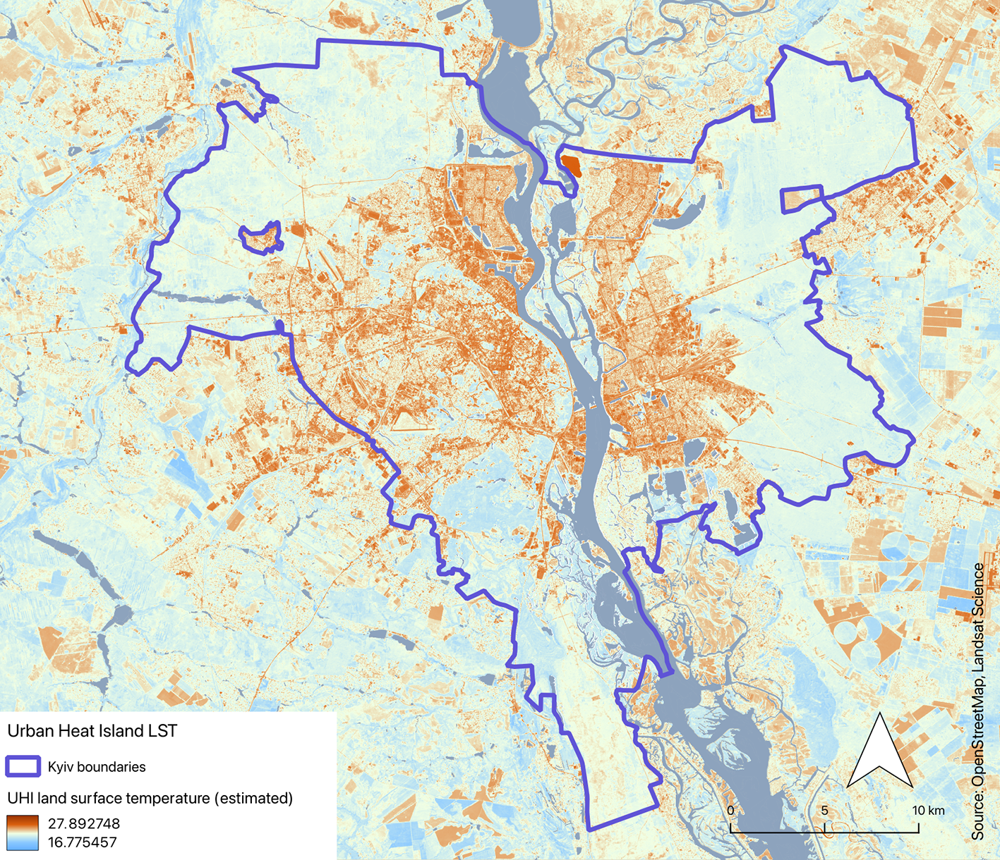
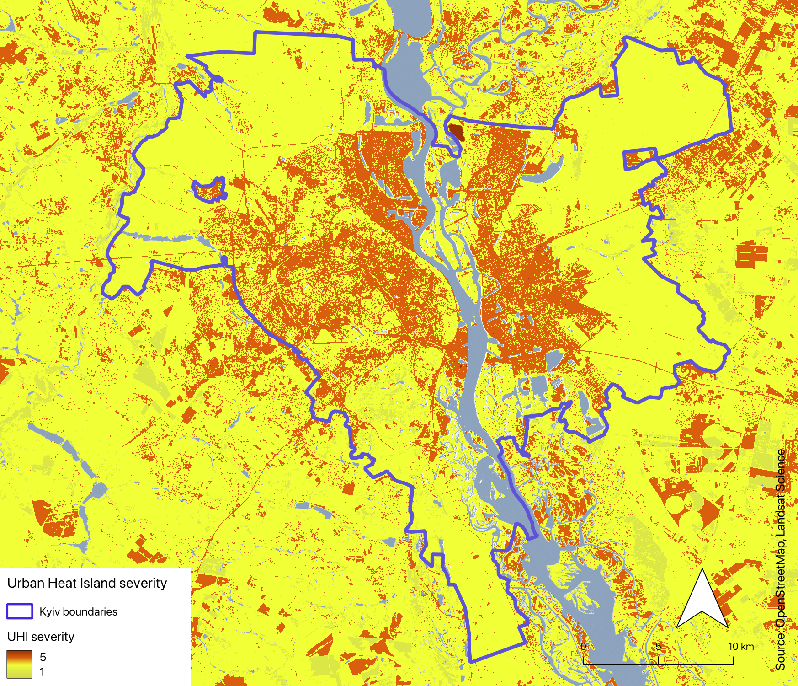
• Age of Soviet-era housing stock (Map 9) which will spatially indicate where the redevelopment needs to be directed based on obsolete (1956-1970; Map 10) or deteriorating (1970-1982; Map 11) housing stock. Redevelopment needs to be phased in the way that the oldest buildings (1956-1970) are redeveloped/renovated first. Initial lifespan for this housing stock was 20-25 years and only limited amount of it was demolished and upgraded.
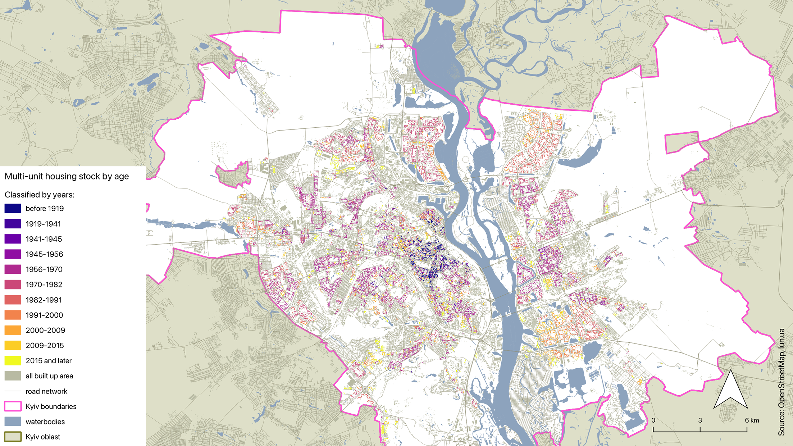
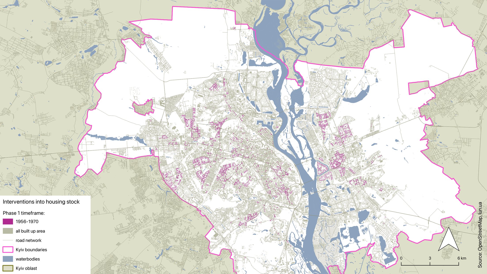
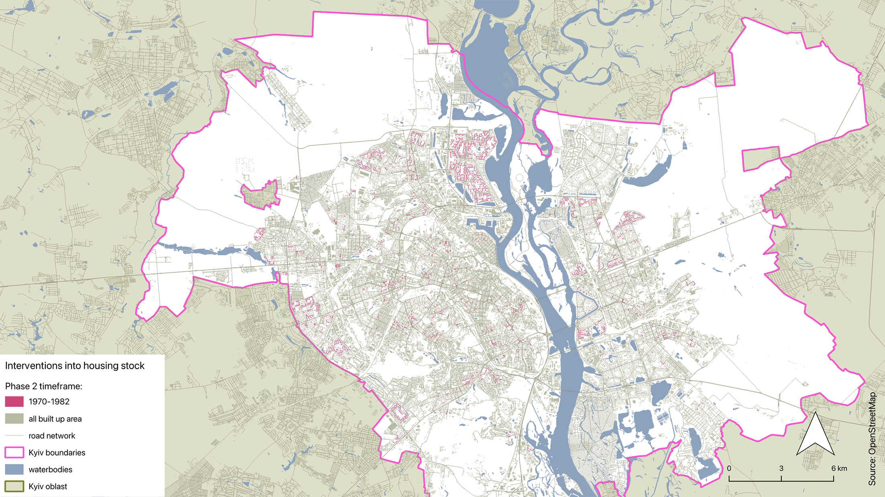
ADDITIONAL CRITERIA WITH MORE GRANULAR APPROACH:
• Urban blocks patterns indicate how urban blocks expanded in size to accommodate distances and recreational areas between buildings, without significant density increases compared to central areas. Density and growth should be directed to this areas to reintroduce more compact connections between buildings and achieve permeability of urban fabric. I mostly relied on existing research on Moscow and change of its urban fabric with the introduction of prefabricated housing in the 1950s (Shlyakhovaya & Dokhov, 2020); no data was derived to conduct similar calculations here, but similar patterns can be observed in urban fabric of Kyiv. Another consideration is 100m x 100m or 1 ha block as a systematic approach to achieve permeable environment for ease of movement in any direction (Barton et al., 2010, as cited in Barton, 2017).
• Street profile patterns indicate as well how street profile changed from compact to less dense and spread out and less pedestrian friendly, but more car oriented. Gaps between building needs to be filled to form traditional urban block will enclosed the street and reintroduce mix of uses. I again mostly relied on existing research on Moscow and change of its urban fabric with the introduction of prefabricated housing in the 1950s (Shlyakhovaya & Dokhov, 2020); no data was derived to conduct similar calculations here, but same and similar patterns can be observed in urban fabric of Kyiv (Figure 3).
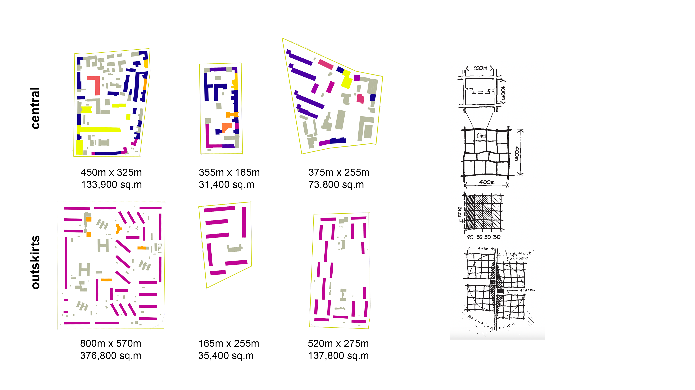
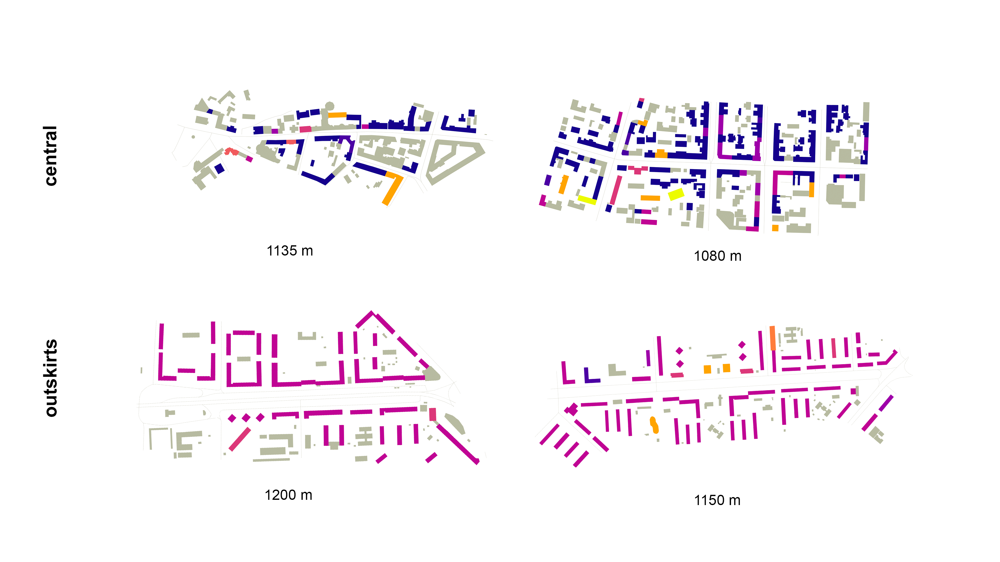
PHASING APPROACH
Based on defined criteria, primarily due to impact of existing and perspective rapid transit network, subsequent phasing for redevelopment includes two scenarios: main (oriented on metro being the main rapid transit capacity), which provides very limited redevelopment potential, and with transit improvements, which expands redevelopment potential significantly. Improvements to transit system will be obviously gradual as well, similar to the ones for housing stock. As three perspective rapid transit systems are involved, no phasing was provided beyond the general scope of housing redevelopment that the improvements to transit will allow, as it is beyond the scope of this report and subject to transportation master planning exercise. 800 metres / ½ mile radius around transit station is the key principle to define the area for transit-oriented development. 800 m buffers indicate the TOD areas for subject housing stock. This method, commonly used in urban planning and urban development, ensures economic aspect of development by allowing locating commercial and employment uses together with housing in a highly accessible to transit and other active modes of transportation areas, which ensures feasibility of the redevelopment project. “Plans of themselves do not create the physical fabric of cities: investment does” (Barton, 2017, p. 155).
PHASING:
• Phase 1 (main): 1959-1970 housing stock and existing transit nodes – 800m buffers around metro stations
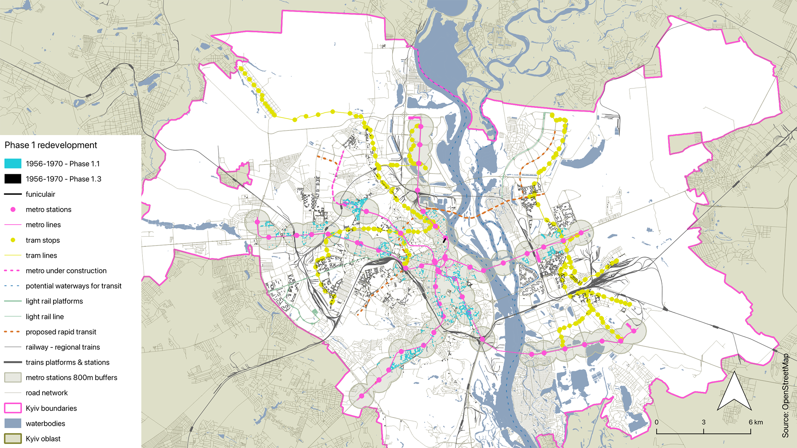
• Phase 1 (alternative): 1959-1970 housing stock and perspective transit nodes – 800m buffers around metro stations and perspective rapid transit stations
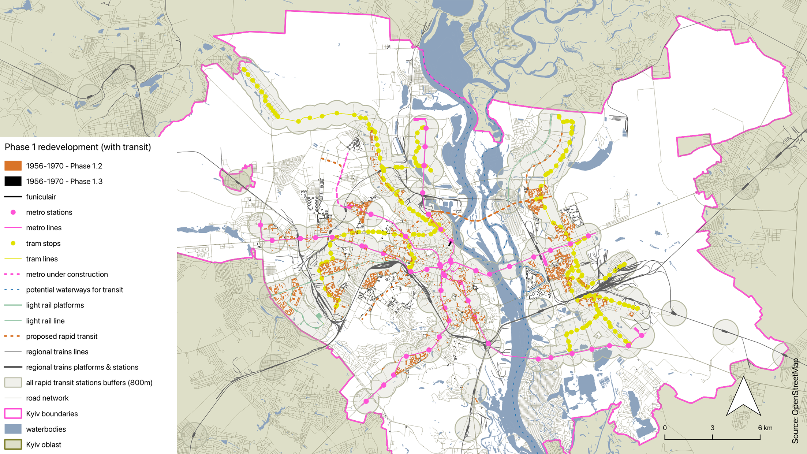
• Phase 2 (main): 1970-1982 housing stock and existing transit nodes – 800m buffers around metro stations
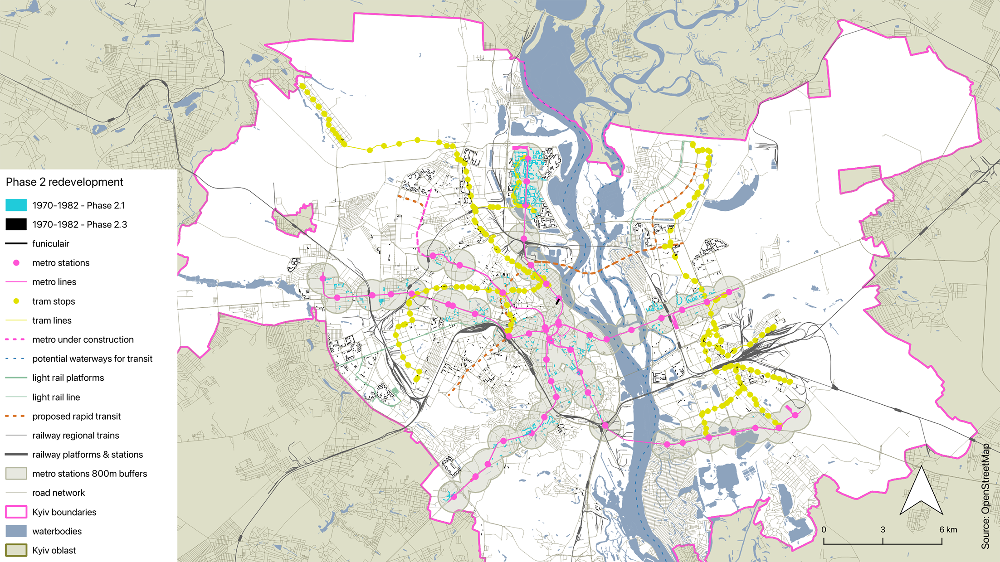
• Phase 2 (alternative): 1970-1982 housing stock and perspective transit nodes – 800m buffers around metro stations and perspective rapid transit stations
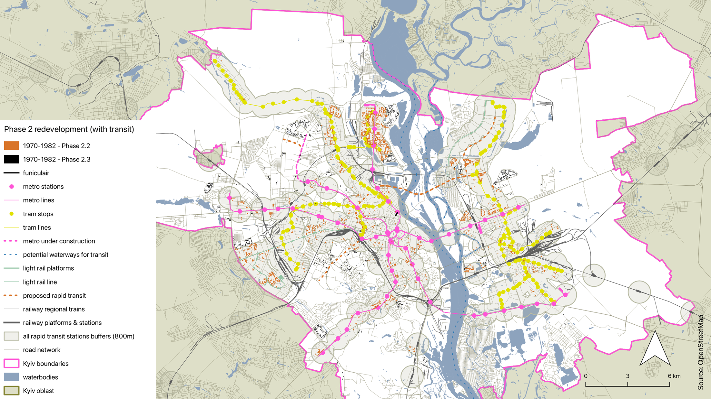
CONCLUSIONS
The redevelopment of obsolete and deteriorating Soviet-era housing stock represents an opportunity to introduce a dualistic housing system, with social and market housing, and reintegrate existing secondary use housing stock into the social housing stock. Involvement of the state is essential for these processes to occur. Involvement of the developer is needed to renovate and densify the deteriorating “sleeping districts.” The share of the housing stock considered for social housing provision is subject in itself that validates a separate research. Provision of social housing is extensively researched by Pavlo Fedoriv and Cedos think tank. The development of the comprehensive housing policy, and regulatory and fiscal mechanisms for its implementation and monitoring should be state’s responsibility.
Ukraine is famous for its civic society. Most research pertains to its impacts on the political sphere. There is little research in terms of its impact on urban development, however, it is extensively visible even just on the streets, in minor things like DIY refurbishments of the housing stock. Some research is already available, such as transformations of balconies. With properly established housing policy, presumably, civil society can take over part of the process and self-organize to redevelop/renovate their homes.
POLICY RECOMMENDATIONS AND FUTURE RESEACRH
• Kyiv currently has no Official Plan to guide growth and development. Adoption of the one is crucial.
• Adaptation of existing methodology for interventions into post-war mass-produced housing stock, developed by Fabio Lepratto, “Housing Bricolage. Tools for Manipulating Post-War Collective Housing,” published in DASH #14 – From Dwelling to Dwelling. This methodology allows for wide range of interventions, from minimal pertaining only to renovations of existing building and its building envelope to major adjustments of urban fabric. This methodology also allows manipulations with existing structure like additions. Thus, some aspects of it can be used specifically to attract investments into renovation and redevelopment.
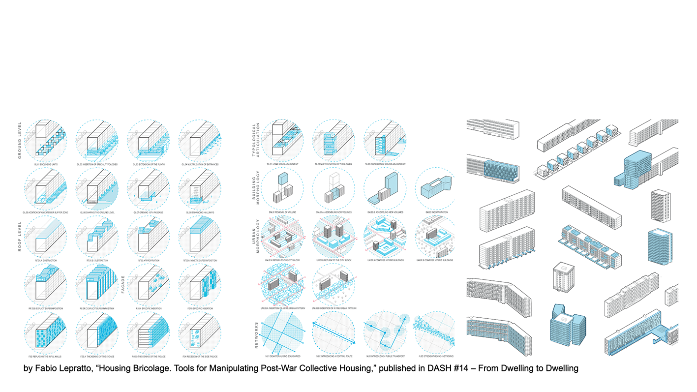
• Need to develop Transportation Masterplan that considers introduction and reintroduction active modes of transportation where they were decommissioned in 1980s and 1990s together with exploration of feasibility of the river transport.
• Sustainability Strategy to guide the proposed redevelopments and development in general.
• Housing Plan with clearly defined strategies for implementing a dualistic housing system and acquisition of dwelling units for the provision of social housing.
• Housing Plan may also direct investments and development to former industrial areas that are extensively underutilized due to reduced economic capacities and dismantling of vast areas of garages on public land that use land inefficiently and create urban gaps.
• Revisions to planning regulations and building codes to accommodate densification.
NOTES:
1. The quality and quantity of information that different scholars were able to derive from different sources, as well as questionable statistical data on housing during USSR times and insufficient statistical data in post-socialist times, including comparative housing data and primary and secondary quantitative socio-economic and demographic data (Fedoriv & Lomonosova, 2019; Lux & Sunega, 2014), and major demographic shifts associated with military conflict in the East in 2014 and full-scale Russian invasion in 2022 impedes the ability to objectively access the housing needs of the population as well as the state of the existing housing stock. The author acknowledges generalizations in the areas where the data is limited.
2. Some statements represent common knowledge in Ukraine; such as limitation of the statistical data, DIY refurbishments of the housing stock, outdated building regulations and planning norms, changes of governments in 1917-1920, corruption etc. Therefore, no references were included to confirm this information.
REFERENCES:
Barton, H. (2017). City of well-being : a radical guide to planning. Routledge. http://www.dawsonera.com/abstract/9781315438689
Buckleyand, R. M., & Tsenkova, S. (2001). Hosuing Market Systems in Reforming Socialist Economies: Comparative Indicators of Performance and Policy. European Journal of Housing Policy, 1(2), 257-289. https://doi.org/10.1080/14616710110083669
CANactions School. (2016). Architour with guest lecturer Leonard Streich / Something Fantastic Kyiv Ukraine, CANactions. https://youtu.be/T6bxOW5s-bQ?si=j1XGSonSYg3uZcs_
Derzhstat. (2021). Statistical Annual Report, Ukraine. https://stat.gov.ua/en/datasets/households-living-conditions-survey
Drozdov & Partners. (2023). New Living Environment: Housing typologies for a changing Ukraine. D. Partners. https://drozdov-partners.com/en/news-all-en/housing-typologies-for-a-changing-ukraine/
Enyedi, G. (1996). Urbanization under Socialism. In G. D. Andrusz, M. Harloe, & I. n. Szelényi (Eds.), Cities after socialism : urban and regional change and conflict in post-socialist societies. Blackwell. https://doi.org/10.1002/9780470712733
Fedoriv, P. (2020, May 2020). Mikrorayons and Macroproblems. CANactions Magazine, (1 “Mikrorayons”), 326.
Fedoriv, P., & Lomonosova, N. (2019). Housing Policy in Ukraine. Cedos. https://cedos.org.ua/en/researches/derzhavna-zhytlova-polityka-v-ukraini-suchasnyi-stan-ta-perspektyvy-reformuvannia/
Gnatiuk, O., & Kryvets, O. (2018). Post-Soviet residential neighbourhoods in two second-order Ukrainian cities: Factors and models of spatial transformation. Geographica Pannonica, 22(2), 104-120.
Hegedüs, J. (2012). Housing Privatization and Restitution. In J. z. Hegedüs, M. Lux, & N. r. Teller (Eds.), Social Housing in Transition Countries. Taylor and Francis. http://public.eblib.com/choice/publicfullrecord.aspx?p=1074915
IOM UN Migration. (2024). Ukraine Housing Brief: Living conditions, rental costs and mobility factors. International Organization for Migration IOM UN Migration and Global Data Institute. https://dtm.iom.int/reports/ukraine-housing-brief-living-conditions-rental-costs-and-mobility-factors-july-2024?close=true
ITDP. (no date). What is TOD? Institute for Transportation and Development Policy. https://tod.itdp.org/what-is-tod.html
Lux, M., & Sunega, P. (2014). Public Housing in the Post-Socialist States of Central and Eastern Europe: Decline and an Open Future. Housing Studies, 29(4), 501-519. https://doi.org/10.1080/02673037.2013.875986
Meuser, P. (2020, May 2020). Paradise of Prefabricated Mass Housing: The Mosaic Façades by the Jarsky Brothers in Soviet Tashkent. CANactions Magazine, (1 “Mikrorayons”), 326.
Neugebauer, C. S. (2020, May 2020). Large Housing Estates in Germany - A Turbulent History of Modern Ideas. CANactions Magazine, (1 “Mikrorayons”), 326.
Niemeyer, M. (2020, May 2020). Modernist Mass Housing - To Keep or not to Keep that is the Question. CANactions Magazine, (1 “Mikrorayons”), 326.
Rozanov, N. (1982). Kroopnopanyel'noye domostroyeniye [Large-panel housing construction]. Stroyizdat.
Shlyakhovaya, A., & Dokhov, R. (2020, May 2020). Rebooting the Periphery of a Post-Socialist City. CANactions Magazine, (1 “Mikrorayons”), 326.
Stephens, M., Lux, M., & Sunega, P. (2015). Post-Socialist Housing Systems in Europe: Housing Welfare Regimes by Default? Housing Studies, 30(8), 1210-1234. https://doi.org/10.1080/02673037.2015.1013090
Struyk, R. J. (1996). Housing Privatization in the Former Soviet Bloc to 1995. In G. D. Andrusz, M. Harloe, & I. n. Szelényi (Eds.), Cities after socialism : urban and regional change and conflict in post-socialist societies. Blackwell. https://doi.org/10.1002/9780470712733
Sukhomud, G., & Shnaider, V. (2023). Continuity and change: wartime housing politics in Ukraine. International Journal of Housing Policy, 23(3), 629-652. https://doi.org/10.1080/19491247.2022.2153983
Szelenyi, I. (1996). Cities under Socialism - And After. In G. D. Andrusz, M. Harloe, & I. n. Szelényi (Eds.), Cities after socialism : urban and regional change and conflict in post-socialist societies. Blackwell. https://doi.org/10.1002/9780470712733
Tsenkova, S., & Turner, B. (2004). The Future of Social Housing in Eastern Europe: Reforms in Latvia and Ukraine. European Journal of Housing Policy, 4(2), 133-149. https://doi.org/10.1080/1461671042000269001
designed & built by masha vakula